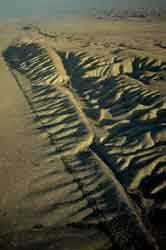
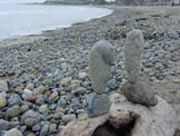

|
Geology: Selected Resources |
| This handout is compiled by Monica White. It is designed to help you begin your research at the LAC Library and on the World Wide Web. If you need further assistance, please consult a librarian at the Reference Desk during library hours. |
|
|
Bedded Navajo Sandstone
Copyright © Corbis Corp. |
| Contents: | ||||
| Find Reference Books | Find Books to Check Out | Find Articles | Find Web Sites | Cite Your Sources | ||||
| FIND REFERENCE BOOKS |
|
| In order to get ideas for your research paper, you may want to browse some of the Library's reference books related to geology. Following are suggested titles: |
|
| Callinor's Dictionary of Geology | Ref QE 5 .C45 1986 | |
|
Encyclopedia of Earthquakes & Volcanoes
|
Ref QE 521 .R58 1994
|
|
| Encyclopedia of Minerals | Ref QE 355 .R6 | |
| Geology. 2 vols. | Ref QE 5 .G465 1999 | |
| Innovations in Earth Sciences | Ref QE 26.2 .I5 1999 | |
| Macmillan Encyclopedia of Earth Sciences. 2 vols. | Ref QE 5 .E5137 1996 | |
| Minerals of the World | Ref QE 366.8 .S3813 1992 |
| FIND BOOKS TO CHECK OUT |
|
| Voyager, the Library's online catalog, indexes books, pamphlets, and other material by subject, author, title, keyword, and call number. To search Voyager by subject, enter a term and click on "subject search" in the pull-down menu. Like most American academic libraries, LBCC Library uses Library of Congress subject headings, such as the following: |
|
| Faults (Geology) | [Subject Heading Search] | |
| Geology | [Subject Heading Search] | |
| Geology, Structural | [Subject Heading Search] | |
| Mineralogy | [Subject Heading Search] | |
| Petroleum Geology | [Subject Heading Search] | |
| Petrology | [Subject Heading Search] | |
| Physical Geology | [Subject Heading Search] | |
| Rocks | [Subject Heading Search] | |
| Sedimentology | [Subject Heading Search] | |
| Sediments (Geology) | [Subject Heading Search] | |
| Volcanism | [Subject Heading Search] |
| To search Voyager by keyword, enter essential keywords preceded by the "plus" sign; enter phrase searches in parenthesis, as shown below: |
| California +geology | [Keyword Search] | |
| "global warming" | [Keyword Search] |
| To search Voyager by title, enter the title (omitting leading articles, such as "a," "an," "the") and click on "title search" in the pull-down menu, as shown below: |
| Geology of California | [Title Search] |
| To search Voyager by author, enter the author's last name, followed by the first name or initial. |
| Norris, Robert | [Author Search] |
| Since LBCC Library has a partnership agreement with CSULB, you may check out books from the University Library. To identify books, search CSULB's online catalog, called Coast, which is accessible over the Web at http://coast.csulb.edu. |
| Contents: | ||||
| Find Reference Books | Find Books to Check Out | Find Articles | Find Web Sites | Cite Your Sources | ||||
| FIND ARTICLES |
| The Library subscribes to a number of online databases, which are accessible over the World Wide Web, from remote computers or those located in the Library. These databases index and abstract articles, and in some cases, provide the full text. The databases available through Long Beach City College Library which are perhaps the most useful for your assignment are ProQuest and SIRS Researcher. To access the Library's online databases, first point your browser to the Library’s homepage at http://lib.lbcc.edu. Click on the button labeled “Online Databases.” You will see a list of databases available for searching. Click on the database you want to search. If you are accessing the databases remotely from your home or office, you will be prompted for a user name and password. You may obtain a list of the current user names and passwords from a librarian at the Reference Desk. To become proficient in database searching, the librarians recommend that you attend the free, drop-in workshops, offered on Tuesday from 4 to 5:30 pm in Room L208 (the Open-Access Lab.). There, you will receive individual instruction and hands-on practice. |
| ProQuest |
|
| ProQuest covers literature published in newspapers, magazines, trade journals, and scholarly journals. The basic search allows you to search for keywords and combine keywords with the following connecting words (known as Boolean operators): AND, OR, NOT. |
|
| Sample basic search |
||
| California and earthquakes |
| The guided search allows you to use fields to focus your search on a specific piece of information. Sample fields are subject, author, publication name, and article type. |
| Sample guided search |
||
| California | [Geographical Name] | |
| plate tectonics | [Subject] |
| SIRS Researcher |
| Sample search | ||
| plate tectonics |
| General Science Index (located in the Reference Room on an Index Table) |
| This print index provides citations to articles in periodicals. Use this print index to identify older articles published prior to 1980, which are not indexed in the online databases. |
||
| Sample search | ||
| Geology--California | ||
| Selected Periodicals | ||
 |
Shelved under the call number GE in the Periodicals Room California Geology Earth Island Journal Journal of Geology Journal of the Geological Society Natural Hazards Observer Rocks and Minerals Stone World San Andreas Fault Copyright © Corbis Corp. |
|
| Electronic Journals | ||
| The full text of this e-journal is available on the Web. |
||
| Geotimes | ||
| FIND WEB SITES |
| Google is a powerful search engine equipped with technological innovations that retrieve the most relevant results to any query. Google has a huge database--2 billion fully indexed Web documents. To access Google, go to http://www.google.com. To enter a query, type in descriptive words and press “enter” or click on the Google search button. Since Google is designed to retrieve pages that include all of your search terms, there is no need to include “and” between them. Following is a sample Google search: |
|
| California geology |
| Librarians' Index to the Internet (LII) and Infomine are excellent annotated subject directories of Internet Resources. To access this site, go to http://www.lii.org. Click on "Science, Computers, & Technology," then click on "Geology." To access Infomine, go to http://infomine.ucr.edu. |
|
| Selected Web Sites |
 | |
The LBCC librarians recommend the following sites: American Association of Petroleum Geologists http://www.aapg.org/ |
| American Geological Institute http://www.agiweb.org/ |
Rocks at San Onofre Copyright © Larry White |
|
| American Geophysical Union http://www.agu.org/ |
||
| California Geological Survey http://www.consrv.ca.gov/cgs/index.htm |
||
| Earthquake Info. from the U.S.G.S. http://quake.wr.usgs.gov/ |
||
| Geologic Hazards Team http://geohazards.cr.usgs.gov/ |
||
| Geological and Geophysical Databases, Information , and GIS Map Server http://atlas.geo.cornell.edu/ |
||
| Geological Society of America http://www.geosociety.org/index.htm |
||
| Geology at the University of California Museum of Paleontology http://www.ucmp.berkeley.edu/exhibit/geology.html |
||
| Global Environmental Change Research http://id.water.usgs.gov/projects/icecore/ |
||
| Lists and Maps of Recent Earthquakes http://www.seismo.usbr.gov/seismo/eqdata.html |
||
| Mineral Gallery http://mineral.galleries.com/default.htm |
||
| National Geophysical Data Center http://www.ngdc.noaa.gov/ |
||
| Southern California Earthquake Data Center http://www.data.scec.org/ |
||
| U.S. Geological Survey, Recent Earthquakes in California and Nevada http://quake.wr.usgs.gov/recenteqs |
||
| U.S. Government Agencies (a portal to scientific material from government agencies) http://www.science.gov |
||
| Volcano World. University of North Dakota http://volcano.und.nodak.edu/vw.html |
||
| When selecting additional Web sites for research, consult Thinking Critically About World Wide Web Resources. This page, prepared by UCLA Librarian Esther Grassian, presents an excellent set of criteria for evaluating the authority and reliability of Web sites. | |
| CITE YOUR SOURCES |
|
| Remember to list the sources used in your research in a bibliography or works-cited page following a documentation style, such as MLA (Modern Language Association) or APA (American Psychological Association). The most up-to-date guides for citing Web pages and other electronic sources in footnotes and bibliographies are on the Web, and they are accessible from the Library's homepage at http://lib.lbcc.edu. Click on "Internet Resources," then click on "Citation Guides." |
|
| Contents: | ||||
| Find Reference Books | Find Books to Check Out | Find Articles | Find Web Sites | Cite Your Sources | ||||
Images reproduced with permission from Corbis Corporation and Larry White.
Further reproduction or distribution is prohibited without prior written permission from the copyright holder.
E-mail questions and comments to mwhite@lbcc.edu
Monica White, Liberal Arts Campus
http://lib.lbcc.edu/monicawhite/orientations/geology.html
Last updated: May 30, 2006
| Back to Library homepage |